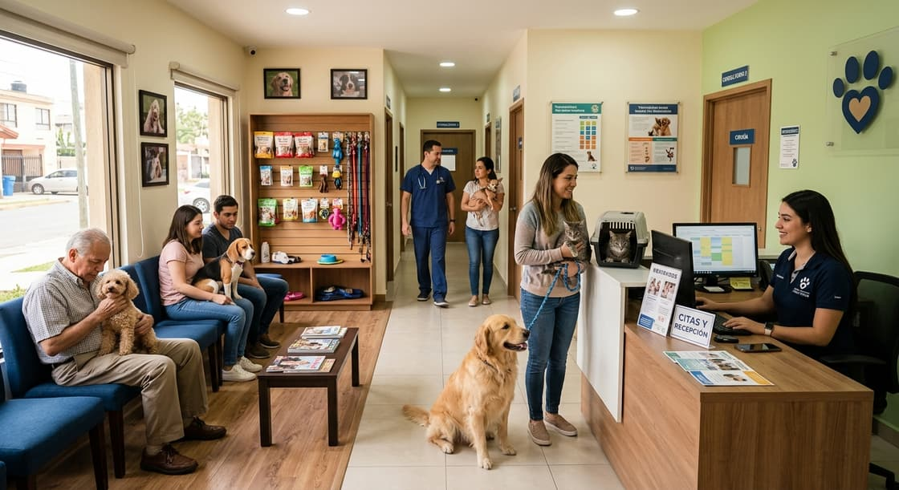

Qué hacemos
Sin derivaciones a otra clínica ni esperas de tres días por un análisis. El quirófano, el laboratorio y los rayos X están en el mismo consultorio donde te atendemos.
Revisión completa, diagnóstico y plan de tratamiento. Cuarenta minutos sin prisas para resolver todas tus dudas.
DESDE S/99
Esquema completo para cachorros y refuerzos anuales, con recordatorio automático por WhatsApp.
Cartilla digital incluida
Quirófano propio con monitorización continua, anestesia inhalada y hospitalización posoperatoria.
Alta el mismo día
Atención inmediata los 365 días del año. Estabilizamos, diagnosticamos y te explicamos cada paso.
Sin cita previa
Baño medicado, corte por raza y cuidado dental. Manejo libre de estrés, sin jaulas de secado.
Perros y gatos
Análisis clínicos, rayos X digitales y ultrasonido en sitio. Resultados el mismo día.
Resultados en 2 h
¿No sabes qué necesita tu mascota? Cuéntanos por WhatsApp y te decimos.
Liquidación de estantería

La clínica
Desde el 2011, somos una clínica veterinaria dedicada al cuidado integral de perros y gatos. Contamos con un equipo profesional y espacios equipados para brindar atención médica, diagnósticos, tratamientos y procedimientos en un ambiente seguro y tranquilo.
Agendamos menos pacientes por hora a propósito, para que nadie salga con dudas.
Salas separadas para perros y gatos, feromonas, y nada de sujeción a la fuerza.
Te decimos cuánto cuesta y qué incluye antes de hacer cualquier estudio.
Expediente digital con vacunas, análisis y radiografías, que puedes pedir cuando quieras.